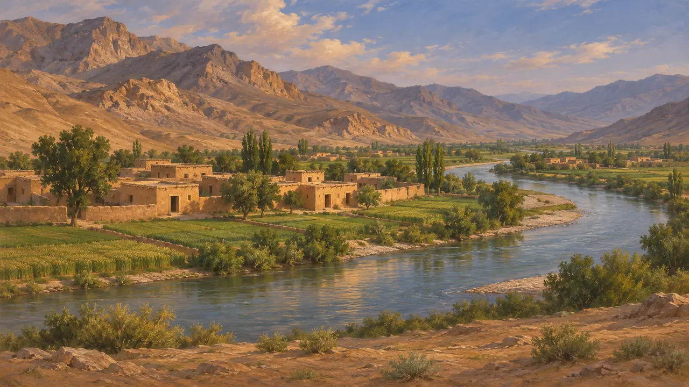
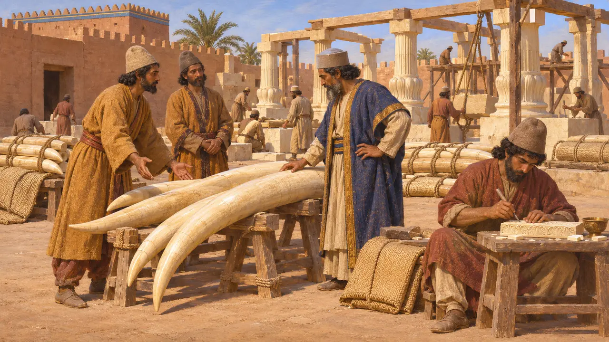
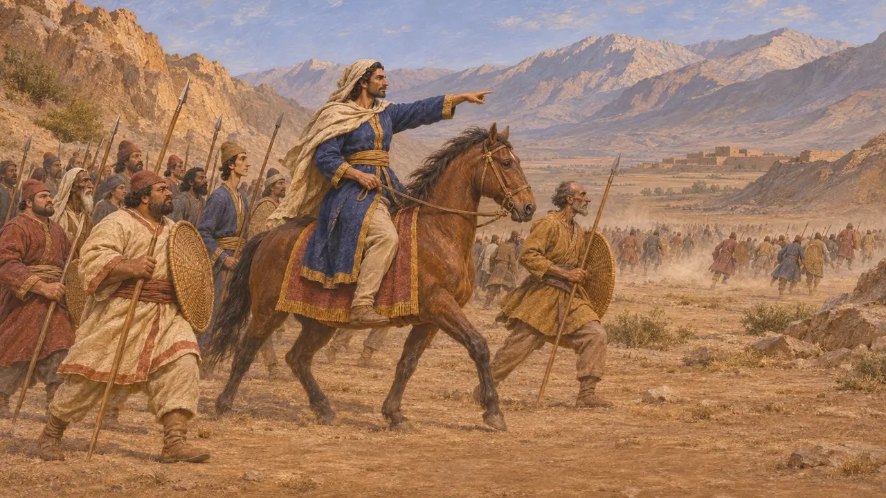
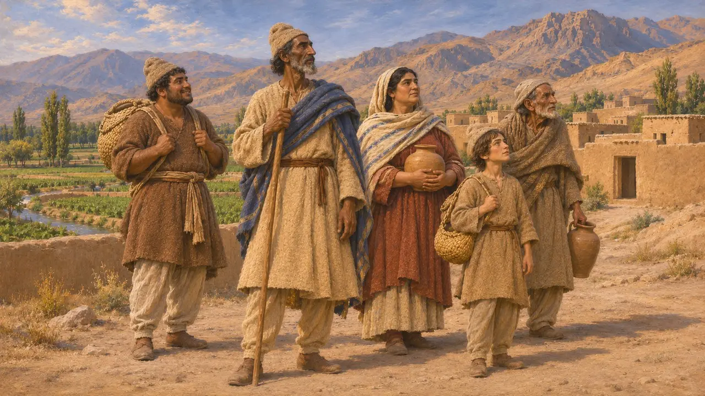
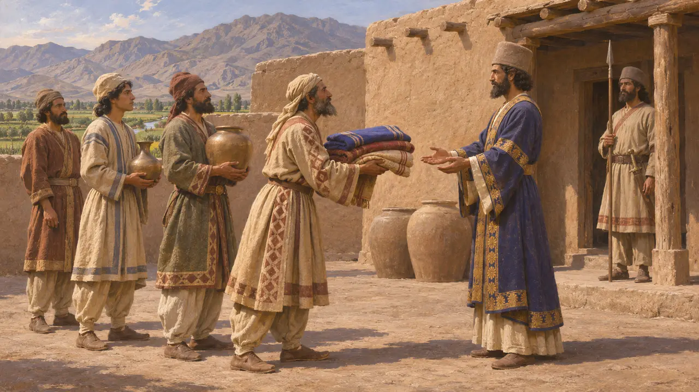

Арахосия
Восточная провинция Персидской державы в районе современного Кандагара, VI–V века до н. э.
В игре: Уровень 4: Терраса, Уровень 5: Хартия
Арахосия была восточной провинцией державы Ахеменидов, в области современного Кандагара на юге Афганистана. Надписи Дария называют её среди его земель, и она стала ареной боёв во время мятежей 522-521 годов до н. э. Хартия Суз называет её одним из мест, откуда поставляли слоновую кость.
В игре: Игра упоминает Арахосию только в Летописи и в статьях о хартиях Вахьяздаты и Суз, как восточную провинцию и источник слоновой кости. Собственной механики у неё нет.


Хартия Суз и слоновая кость
Свидетельства эпохиВ строительной хартии дворца в Сузах Дарий говорит, что слоновую кость для постройки привезли из Эфиопии, из Синда и из Арахосии. Арахосия, таким образом, была одним из трёх источников. В хартии названы и мастера, обрабатывавшие слоновую кость.
DSf

Бои в Арахосии
Свидетельства эпохиВ Бехистуне Дарий сообщает, что Вахьяздата, лже-Бардия в Персиде, послал войско против Вивана, которого Дарий поставил сатрапом в Арахосии. Дарий рассказывает о сражениях при Капишаканише и при Гандутаве и утверждает, что одолела его сторона. Текст представляет собой собственный рассказ Дария и был написан, чтобы оправдать его правление.
DB §§45-47

Арахосия у Геродота
Античное свидетельствоВ податном перечне сатрапий Геродота Арахосия не названа как округ. Некоторые из её народов, возможно, значатся под другими именами в его списке восточных народов. Более поздние авторы, например Арриан, описывают этот край во времена Александра, спустя много лет после периода, который охватывает игра.
Herodotus 3.89-95

Как читать списки даней
СпорныйПодатные округа Геродота не совпадают с персидскими перечнями земель, поэтому историки расходятся во мнениях о том, как были сгруппированы восточные провинции, например Арахосия. Некоторые считают, что сатрапии были административными единицами, отличными от перечней народов, высеченных на царских памятниках. Точные границы Арахосии не установлены.
P. Briant, From Cyrus to Alexander, 2002
Источники
- DB §§6, 45-47 (Behistun inscription)
- DSf (Susa foundation charter)
- DNa (Naqsh-e Rostam inscription)
- Herodotus 3.89-95
- P. Briant, From Cyrus to Alexander, 2002